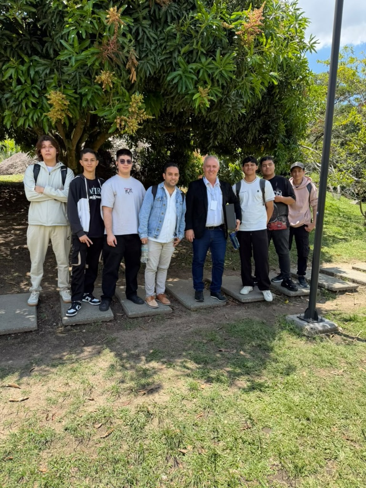
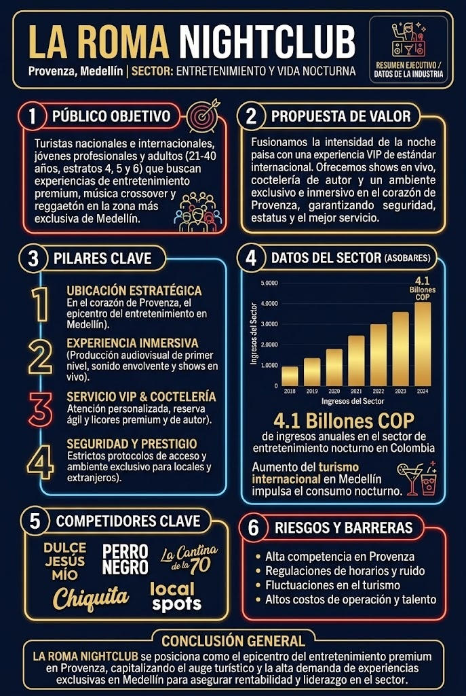

Observatorio Digital de Innovación Aplicada en Inteligencia Artificial y Transformación Digital en Entornos Laborales
Pilares fundamentales que guían la investigación, el desarrollo tecnológico y la aplicación práctica en nuestro semillero.
Estudio y aplicación de modelos de aprendizaje automático, redes neuronales y herramientas de IA generativa. Nos enfocamos en comprender cómo estas tecnologías optimizan los procesos operativos, potencian la toma de decisiones estratégicas y transforman las dinámicas profesionales modernas.
Análisis integral de la evolución digital en las organizaciones y entornos laborales. Investigamos el impacto de la digitalización en la reestructuración de modelos de negocio, la adaptabilidad de las empresas y la evolución de las competencias requeridas en el mercado actual.
Registro de nuestra participación institucional, eventos y vinculación con la comunidad.

Participación activa de los integrantes del semillero ODIN en el Foro Territorial Inteligente, evaluando tendencias regionales de innovación junto a expertos y comunidad académica.

Actividad institucional programada por la universidad donde participamos con un Stand interactivo dedicado a mostrar y enseñar el uso práctico de la Inteligencia Artificial de forma básica y accesible.
Iniciativas tecnológicas desarrolladas por los semilleristas.
Iniciativa orientada a conectar la academia, la industria y la innovación en los municipios del norte del Valle de Aburrá mediante el uso de tecnologías emergentes.
Diseño e implementación de programas formativos prácticos dirigidos al personal de la institución para optimizar sus funciones administrativas y académicas mediante herramientas de IA.
Talento académico comprometido con la investigación formativa y tecnológica.
Liderazgo orientado al desarrollo de competencias en analítica e inteligencia artificial.
Jóvenes investigadores apasionados por la transformación digital y el desarrollo práctico.
Redes de cooperación universitaria para llevar la tecnología a los entornos de trabajo.
¿Perteneces a la IUMAFIS y te apasiona la Inteligencia Artificial? Postula tu perfil con nosotros.